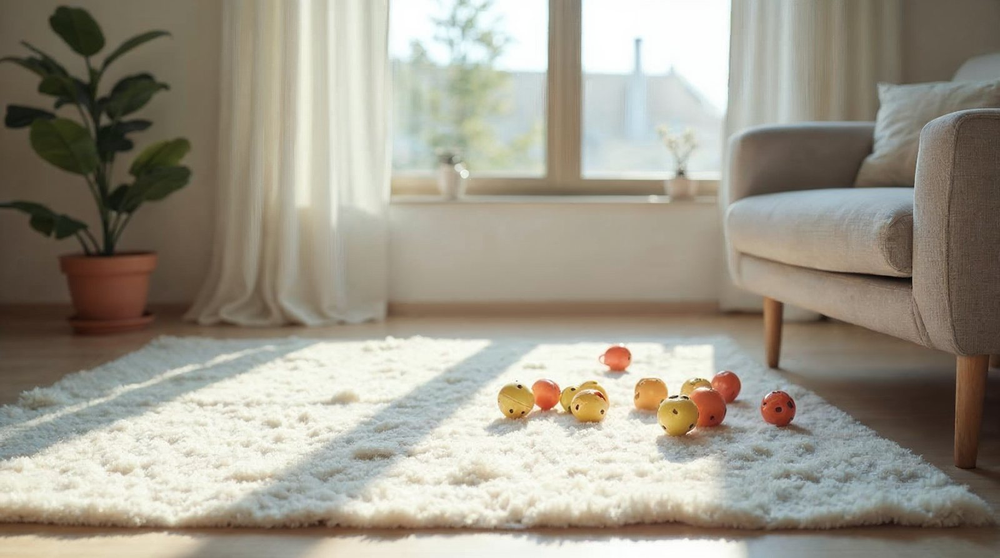
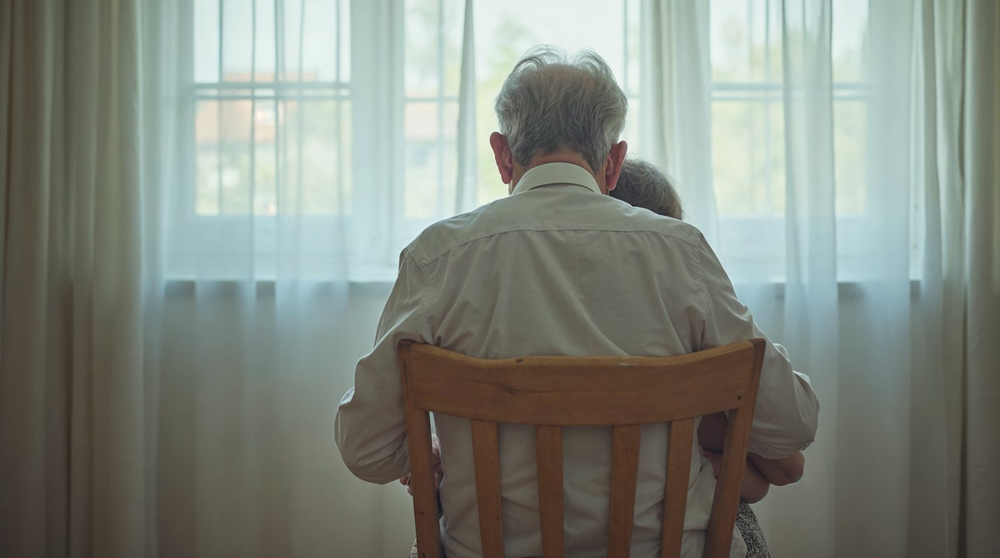
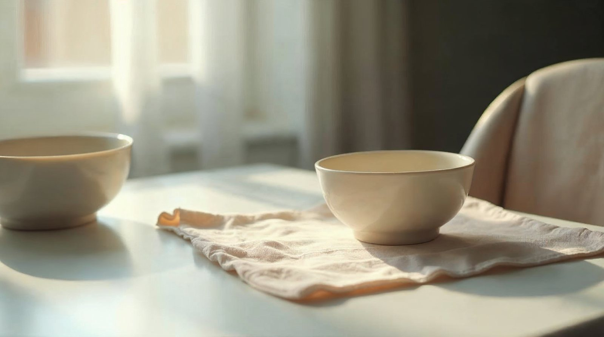
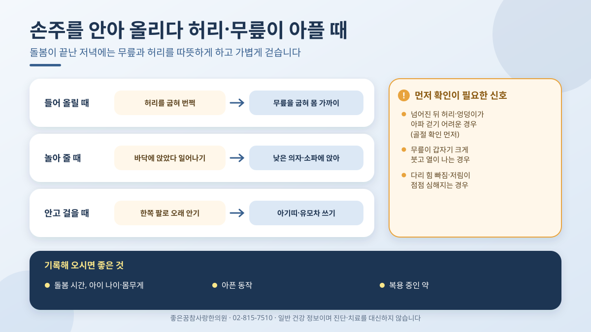

이종호 한의사 감수좋은꿈참사랑한의원 대표원장 (한의사 면허번호 19769)발행 2026-11-24 · 수정 2026-11-26
이 글의 차례
- 왜 이런 불편이 생길 수 있나요
- 허리와 무릎의 불편은 어떻게 나눠 볼까요?
- 손주 돌봄 중 자주 생기는 상황
- 스스로 점검해 보세요
- 왜 자녀를 키울 때보다 손주 돌봄이 더 힘들게 느껴질까요?
- 먼저 이렇게 여쭙니다
- 일상에서 먼저 해 볼 수 있는 것
- 돌봄 동작을 이렇게 바꿔 보세요
- 바닥 생활과 계단은 어떻게 할까요?
- 돌봄 뒤 집에서 할 수 있는 가벼운 움직임
- 아이가 안아 달라고 할 때는
- 본인의 끼니와 잠도 챙겨 주세요
- 자녀와는 어떻게 이야기를 나눌까요?
- 한의원에서 함께 살필 수 있는 경우
- 첫 진료에서는 이렇게 살핍니다
- 얼마나 지켜보고 언제 상담할까요?
- 돌봄 일기는 이렇게 남겨 보세요
- 마음이 지칠 때도 있으시지요
- 이렇게 기록해 오시면 상담이 쉬워집니다
- 이런 증상은 먼저 확인이 필요합니다
허리를 굽히지 말고 무릎을 굽혀 아이를 몸 가까이 붙여 드는 것이 돌봄 중 허리 부담을 줄이는 기본입니다. 맞벌이 자녀를 대신해 상도동이나 장승배기, 흑석동에서 손주를 돌보다 보면 아이를 안고 어린이집을 오가거나 바닥에 앉아 놀아 주다 일어설 때 허리와 무릎이 아프기 쉽고, 손주 앞에서는 내색하지 않는 분도 많습니다.
왜 이런 불편이 생길 수 있나요
- 허리를 굽힌 채 아이를 들어 올리면 허리 아래쪽에 큰 부담이 한꺼번에 실립니다.
- 바닥에 앉았다 일어나는 동작이 하루에도 여러 번 반복되면 무릎에 부담이 쌓일 수 있습니다.
- 아이를 한쪽 팔로 오래 안으면 몸이 한쪽으로 기울어 허리와 골반 한쪽이 지치기 쉽습니다.
- 나이가 들며 근력과 뼈가 약해지면 같은 일도 더 힘들게 느껴질 수 있어 무리하지 않는 것이 중요합니다.
허리와 무릎의 불편은 어떻게 나눠 볼까요?
아이를 들어 올리는 순간 허리 아래쪽이 뜨끔하고, 허리를 펴고 쉬면 조금씩 가라앉는다면 드는 자세에서 오는 부담을 먼저 봅니다. 이때는 드는 방법과 횟수를 바꾸는 것이 출발점입니다.
바닥에서 일어설 때, 계단을 내려갈 때 무릎 앞쪽이 시큰하다면 무릎에 쌓인 부담을 함께 살핍니다. 오래 쪼그려 앉아 놀아 주는 습관이 있는지도 여쭙습니다.
아침에 일어날 때 허리나 무릎이 뻣뻣하다가 움직이면 풀리는지, 저녁이 될수록 심해지는지도 중요합니다. 하루 중 언제 불편한지에 따라 돌봄 일정에서 조절할 부분이 달라집니다.
허리와 무릎이 함께 불편한 분도 많습니다. 무릎이 아파 허리를 굽혀 아이를 들게 되고, 허리가 아파 무릎에 더 기대게 되는 식으로 서로 부담을 주고받기 때문입니다.
그래서 아픈 곳 한 군데만 보기보다 서고, 앉고, 걷고, 아이를 드는 동작 전체를 함께 살펴봅니다. 어디가 먼저 불편해졌는지 기억나시면 그 순서도 알려 주세요.
손주 돌봄 중 자주 생기는 상황
- 예를 들어 기저귀를 갈 때 바닥에 아이를 눕히고 허리를 숙여 오래 있으면, 일어설 때 허리가 한참 펴지지 않기도 합니다.
- 예를 들어 자동차 카시트에 아이를 태우며 몸을 비틀어 안쪽으로 내려놓으면, 허리와 어깨에 부담이 한꺼번에 실리기 쉽습니다.
- 예를 들어 욕조에서 아이를 씻길 때 무릎을 꿇고 허리를 굽힌 자세가 길어지면, 다음 날 무릎과 허리가 함께 뻐근하다고 하시는 분이 많습니다.
- 예를 들어 어린이집 하원길에 아이가 걷기 싫다고 해 한쪽 팔로 안고 언덕을 오르면, 허리와 골반 한쪽이 유독 지치기 쉽습니다.
- 예를 들어 아이가 잠들 때까지 안고 흔들며 서성이는 시간이 길어지면 허리와 무릎, 어깨가 모두 무거워집니다.
스스로 점검해 보세요
- 아이를 들 때 무릎보다 허리를 먼저 굽힌다
- 바닥에 앉아 놀아 주는 시간이 하루 한 시간을 넘는다
- 아이를 늘 같은 쪽 팔로 안는다
- 기저귀를 바닥에서 갈아 준다
- 아이를 안고 계단이나 언덕을 오르내리는 일이 잦다
- 돌봄이 끝난 저녁에 허리나 무릎이 한참 쑤신다
- 손주를 보느라 끼니를 거르거나 늦게 먹는 날이 많다
- 밤에 아파서 뒤척이는 날이 있다
해당하는 항목이 많을수록 바꾸기 쉬운 것부터 하나씩 정해 보세요. 진료 때 이 목록을 보여 주시면 순서를 함께 정하기 쉽습니다.
왜 자녀를 키울 때보다 손주 돌봄이 더 힘들게 느껴질까요?
자녀를 키우던 때와 같은 일을 해도 나이가 들면 근육의 힘과 회복 속도가 달라집니다. 하루 돌봄으로 생긴 피로가 밤사이 다 풀리지 않고 다음 날로 넘어가기 쉽습니다.
아이도 자랄수록 무거워집니다. 처음 돌봄을 시작할 때는 가볍던 아이가 몇 달 사이 훌쩍 커서, 같은 방법으로 안아 올리면 허리와 무릎에 실리는 무게가 점점 늘어납니다.
여기에 손주를 다치게 하면 안 된다는 긴장이 더해지면 어깨와 허리에 늘 힘이 들어가 있게 됩니다. 몸과 마음이 함께 쉬지 못하는 시간이 길어지는 셈입니다.

먼저 이렇게 여쭙니다
- 손주를 하루에 몇 시간 정도 돌보시고, 아이는 몇 살인가요?
- 아이를 바닥에서 안아 올릴 때와 안고 걸을 때 가운데 언제 더 아프신가요?
- 바닥에 앉았다 일어날 때 무릎이 아프거나 붓나요?
- 복용 중인 약(혈압약, 진통제, 골다공증약 등)이 있나요?

일상에서 먼저 해 볼 수 있는 것
- 아이를 들 때 허리를 굽히지 말고 무릎을 굽혀 아이를 몸 가까이 붙여 들기
- 바닥 대신 낮은 의자나 소파에 앉아 놀아 주기
- 아기띠나 유모차를 써서 안고 걷는 시간 줄이기
- 돌봄이 끝난 저녁에는 무릎과 허리를 따뜻하게 하고 가볍게 걷기
돌봄 동작을 이렇게 바꿔 보세요
기저귀는 바닥 대신 허리 높이의 탁자나 침대 위에서 갈아 주세요. 아이가 굴러떨어지지 않도록 한 손은 늘 아이 몸에 대고, 필요한 물건은 미리 손 닿는 곳에 두면 됩니다.
카시트에 태울 때는 차 문 앞에서 몸을 비틀지 말고, 한쪽 무릎을 좌석에 올려 몸을 아이 쪽으로 가까이 붙인 뒤 내려놓으세요. 아이를 몸에서 멀리 뻗은 팔로 드는 자세가 허리에 가장 부담이 큽니다.
목욕은 욕조에 무릎을 꿇기보다 작은 아기 욕조를 낮은 의자 높이에 두고 앉아서 씻기는 방법을 써 보세요. 무릎 밑에는 두툼한 수건이나 방석을 깔아 주시면 좋습니다.
아이를 안을 때는 좌우 팔을 번갈아 쓰고, 오래 안아야 할 때는 아기띠를 써서 무게를 몸 가운데로 모아 주세요. 아기띠 끈은 아이가 가슴 가까이 붙도록 조여야 허리가 덜 앞으로 끌려갑니다.
바닥 생활과 계단은 어떻게 할까요?
바닥에 앉았다 일어나실 때는 한 번에 일어서기보다 소파나 탁자를 짚고 한쪽 무릎을 세운 뒤 천천히 일어나세요. 손으로 몸무게를 나눠 받으면 무릎과 허리에 실리는 힘이 줄어듭니다.
아이와 바닥에서 놀아 줘야 할 때는 쪼그려 앉기보다 방석을 깔고 다리를 편하게 펴고 앉으세요. 30분쯤 지나면 한 번 일어나 자세를 바꿔 주시면 좋습니다.
아이를 안고 계단을 내려갈 때는 무릎에 가장 큰 부담이 갑니다. 엘리베이터가 있는 길을 고르거나 유모차로 다닐 수 있는 길을 미리 알아 두시고, 계단에서는 난간을 꼭 잡으세요. 아이가 스스로 걸을 수 있다면 손을 잡고 한 칸씩 함께 내려가는 것도 방법입니다.
돌봄 뒤 집에서 할 수 있는 가벼운 움직임
의자에 앉아 한쪽 다리를 앞으로 쭉 펴고 발끝을 몸 쪽으로 당긴 채 5초쯤 버텼다 내리기를 번갈아 해 보세요. 무릎 앞쪽 허벅지 근육을 깨워 주는 데 도움이 될 수 있습니다.
바닥에 누워 두 무릎을 세우고 양쪽으로 천천히 넘기기, 누운 채 엉덩이를 살짝 들었다 내리기처럼 부드러운 동작을 몇 번 해 보세요. 아픈 범위까지 억지로 하지 않는 것이 중요합니다.
날씨가 괜찮은 날에는 아이 없이 혼자 20~30분쯤 평지를 걸어 보세요. 아이를 챙기며 걷는 것과 달리 내 걸음에 맞춰 걷는 시간이 몸을 풀어 주는 데 도움이 됩니다. 걷고 난 뒤 무릎이 더 시큰해진다면 거리를 줄이고, 다음 진료 때 걸은 시간과 함께 알려 주세요.
아이가 안아 달라고 할 때는
아이가 걸을 수 있는 나이라면 바로 안아 올리기보다 할머니·할아버지가 먼저 앉아 아이가 무릎에 오르도록 해 보세요. 안아 주는 따뜻함은 그대로 주면서 들어 올리는 횟수를 줄일 수 있습니다. 아이에게도 "할머니 무릎으로 올라와" 하고 놀이처럼 알려 주면 금세 익숙해지는 경우가 많습니다.
울 때 오래 안고 서성이기보다 소파에 앉아 안고 흔들어 주는 방법도 있습니다. 서 있는 시간이 줄어들면 무릎과 허리가 한결 덜 지칩니다.
유모차를 밀 때는 손잡이 높이를 배꼽 언저리에 맞춰 허리를 숙이지 않게 해 주세요. 언덕길에서는 유모차를 몸 가까이 두고 천천히 걸으시면 됩니다.
아이가 무거워졌다고 느껴지면 그때마다 안는 방법을 다시 점검해 보세요. 몇 달 전에는 괜찮던 방법도 아이가 자라면 허리에 더 부담이 될 수 있습니다.
본인의 끼니와 잠도 챙겨 주세요
아이 밥을 먼저 챙기다 보면 본인 식사는 남은 반찬으로 서서 급히 드시는 경우가 많습니다. 아이가 먹을 때 함께 앉아 드시면 서 있는 시간도 줄고 식사도 거르지 않게 됩니다.
아이가 낮잠을 잘 때 집안일을 몰아서 하기보다 20~30분쯤 함께 누워 쉬어 보세요. 허리를 펴고 쉬는 짧은 시간이 오후 돌봄을 버티는 데 도움이 됩니다.
돌봄을 마치고 집에 돌아온 저녁에는 따뜻한 물로 씻고 일찍 잠자리에 드시기를 권합니다. 잠이 부족하면 같은 통증도 더 크게 느껴지고, 다음 날 몸이 더 무겁기 쉽습니다.
자녀와는 어떻게 이야기를 나눌까요?
손주 앞에서도, 자녀 앞에서도 아프다는 말을 아끼시는 어르신이 많습니다. 하지만 불편을 숨긴 채 돌봄이 이어지면 몸이 더 지치기 쉽습니다.
아이를 안아 올리기 힘든 시간대나 동작을 자녀와 미리 나눠 보세요. 무거운 장보기, 목욕시키기처럼 힘이 많이 드는 일은 자녀가 퇴근 뒤나 주말에 맡는 식으로 조정할 수 있습니다.
기저귀 갈이대, 아기 욕조 받침, 유모차처럼 돌봄을 덜 힘들게 하는 도구가 있다면 자녀에게 마련해 달라고 말씀하셔도 괜찮습니다. 도구 하나가 하루 수십 번의 허리 굽힘을 줄여 주기도 하니 망설이지 마세요.

한의원에서 함께 살필 수 있는 경우
- 아이를 들 때마다 허리가 아픈 경우 허리와 골반, 드는 자세를 함께 살핍니다.
- 앉았다 일어날 때 무릎이 아프거나 붓는 경우 무릎 주변과 걷는 모습을 함께 살핍니다.
- 돌봄으로 잠과 쉬는 시간이 부족한 경우 생활 리듬 전체를 함께 살핍니다.
좋은꿈참사랑한의원에서는 모든 분께 맥을 짚으며 어떤 동작에서 아픈지 여쭙고, 필요하다고 판단될 때 초음파로 아픈 부위를 확인한 뒤 상태에 맞춰 침·약침·추나·온열 등을 정합니다. 귀가 전에는 집에서 지켜볼 점과 다음 진료 때 다시 확인할 동작을 알려 드립니다.
첫 진료에서는 이렇게 살핍니다
첫 진료에서는 먼저 맥을 짚으며 돌봄 시간과 잠, 식사, 복용 중인 약을 여쭙습니다. 그다음 허리를 숙이고 펴기, 앉았다 일어서기, 걷는 모습을 함께 보며 어느 동작에서 불편한지 확인합니다.
무릎은 굽히고 펼 때의 움직임과 주변을 눌렀을 때 아픈 자리를 살핍니다. 필요하다고 판단될 때 초음파로 아픈 부위를 확인하고, 침·약침·추나·온열 가운데 지금 상태에 맞는 방법을 정합니다.
골다공증 진단을 받으셨거나 최근 수술·골절이 있었다면 처음에 꼭 말씀해 주세요. 그에 맞춰 치료 방법과 세기를 고릅니다. 받는 중에 불편하면 바로 말씀해 주시면 세기를 줄입니다. 혈액을 묽게 하는 약을 드시는 경우에도 미리 알려 주시면 됩니다.
얼마나 지켜보고 언제 상담할까요?
드는 방법과 놀아 주는 자리를 바꾼 뒤 1~2주 동안, 돌봄이 끝난 저녁에 허리와 무릎 불편을 각각 0~10점으로 적어 보세요. 점수가 조금씩 내려간다면 그 방법을 이어 가시면 됩니다.
바꿔 보아도 점수가 그대로이거나, 아파서 돌봄을 이어 가기 버겁다고 느끼신다면 상담을 받아 보시기를 권합니다. 참고 지내다 보면 손주를 안는 일이 두려워지기도 하니 미루지 마세요. 기록한 점수를 함께 가져오시면 됩니다.
돌봄 일기는 이렇게 남겨 보세요
달력에 그날 돌본 시간과 아이를 안고 다닌 일, 목욕을 시킨 날을 짧게 적어 보세요. 그 옆에 저녁의 허리·무릎 점수를 숫자로 적어 두면 어떤 날 더 힘들었는지 한눈에 보입니다.
글씨 쓰기가 번거로우시면 휴대폰으로 하루 한 번 점수만 자녀에게 메시지로 보내 두는 방법도 있습니다. 자녀도 부모님 몸 상태를 알게 되어 돌봄을 나누는 이야기를 꺼내기 쉬워집니다.
일주일쯤 모인 기록을 진료 때 가져오시면 어떤 돌봄이 가장 부담이었는지 함께 보고, 바꿀 순서를 정하기가 훨씬 수월합니다.
마음이 지칠 때도 있으시지요
손주가 예쁜 마음과 별개로, 매일 이어지는 돌봄은 몸만큼 마음도 지치게 합니다. 쉬고 싶다는 생각이 드는 것은 당연한 일이니 미안해하지 않으셔도 됩니다.
친구를 만나거나 좋아하던 취미를 이어 가는 시간을 일주일에 한 번이라도 지켜 보세요. 몸과 마음이 쉬는 시간이 있어야 돌봄도 오래 이어 갈 수 있습니다.
잠이 계속 얕거나 기운이 없고 작은 일에도 마음이 가라앉는다면 진료 때 편하게 말씀해 주세요. 허리·무릎과 함께 잠과 마음 상태도 같이 살펴봅니다.
이렇게 기록해 오시면 상담이 쉬워집니다
- 하루 돌봄 시간과 아이의 나이·몸무게
- 아픈 동작(들어 올리기, 안고 걷기, 바닥에서 일어나기)
- 무릎이 붓거나 열감이 있는지
- 하루 가운데 가장 아픈 시간대(아침, 오후, 돌봄이 끝난 저녁)
- 집과 자녀 집의 구조(계단, 바닥 생활 여부)
- 복용 중인 약(혈압약, 진통제, 골다공증약 등)
이런 증상은 먼저 확인이 필요합니다
- 넘어진 뒤 허리나 엉덩이 통증이 심해 걷기 어려운 경우
- 무릎이 갑자기 크게 붓거나, 무릎 통증과 함께 몸에 열이 나는 경우
이런 신호가 있으면 한의원보다 가까운 병원이나 응급실을 먼저 찾으세요.

여쭙는 것
- 손주를 하루에 몇 시간 정도 돌보시고, 아이는 몇 살인가요?
- 아이를 바닥에서 안아 올릴 때와 안고 걸을 때 가운데 언제 더 아프신가요?
- 바닥에 앉았다 일어날 때 무릎이 아프거나 붓나요?
생활에서 해 볼 것
- 아이를 들 때 허리를 굽히지 말고 무릎을 굽혀 아이를 몸 가까이 붙여 들기
- 바닥 대신 낮은 의자나 소파에 앉아 놀아 주기
- 아기띠나 유모차를 써서 안고 걷는 시간 줄이기
한의원에서 함께 살필 것
- 아이를 들 때마다 허리가 아픈 경우 허리와 골반, 드는 자세를 함께 살핍니다.
- 앉았다 일어날 때 무릎이 아프거나 붓는 경우 무릎 주변과 걷는 모습을 함께 살핍니다.
- 돌봄으로 잠과 쉬는 시간이 부족한 경우 생활 리듬 전체를 함께 살핍니다.
먼저 확인이 필요한 신호
- 넘어진 뒤 허리나 엉덩이 통증이 심해 걷기 어려운 경우
- 무릎이 갑자기 크게 붓거나, 무릎 통증과 함께 몸에 열이 나는 경우
한눈에 보는 표
| 구분 | 핵심 |
|---|---|
| 여쭙는 것 | 손주를 하루에 몇 시간 정도 돌보시고, 아이는 몇 살인가요? 아이를 바닥에서 안아 올릴 때와 안고 걸을 때 가운데 언제 더 아프신가요? |
| 생활에서 해 볼 것 | 아이를 들 때 허리를 굽히지 말고 무릎을 굽혀 아이를 몸 가까이 붙여 들기 바닥 대신 낮은 의자나 소파에 앉아 놀아 주기 |
| 한의원에서 함께 살필 것 | 아이를 들 때마다 허리가 아픈 경우 허리와 골반, 드는 자세를 함께 살핍니다. 앉았다 일어날 때 무릎이 아프거나 붓는 경우 무릎 주변과 걷는 모습을 함께 살핍니다. |
| 먼저 확인이 필요한 신호 | 넘어진 뒤 허리나 엉덩이 통증이 심해 걷기 어려운 경우 무릎이 갑자기 크게 붓거나, 무릎 통증과 함께 몸에 열이 나는 경우 |
자주 묻는 질문
나이가 들어 그런 거라 참아야 하나요?
나이와 함께 오는 변화도 있지만 돌보는 자세와 시간을 조정하면서 함께 살펴볼 부분이 있습니다. 불편한 동작을 구체적으로 알려 주세요.
자녀가 같이 와야 하나요?
혼자 오셔도 됩니다. 복용 중인 약 목록을 챙겨 오시면 좋고, 가족이 함께 오시면 돌봄 일정을 정리하는 데 도움이 됩니다.
파스를 붙여도 될까요?
피부가 예민하거나 복용 중인 약이 많다면 약사와 상의한 뒤 쓰시기를 권합니다. 붙이고 가렵거나 붉어지면 떼어 내세요.
진료 시간은 어떻게 되나요?
좋은꿈참사랑한의원은 평일 09:30~20:00(점심 13:00~14:00), 토·일·공휴일 09:30~15:00에 진료합니다.
좋은꿈참사랑한의원은 재진 때 지난번 이야기부터 이어서 여쭙니다. 진료시간과 예약은 오시는 길에서 확인하세요.
어디서 상담받을 수 있나요?
좋은꿈참사랑한의원은 서울 동작구 만양로2길 2 신성빌딩 3층·5층(서울 동작구 상도동, 7호선 상도역 3번 출구 근처)에 있습니다. 한의사 3명(이종호 대표원장, 조영기 수석진료원장, 정원영 진료원장)이 진료합니다. 진료시간은 평일 09:30~20:00(점심 13:00~14:00), 토·일·공휴일 09:30~15:00이며, 방문 전 전화로 확인을 권합니다. 예약은 네이버 예약, 카카오톡 상담, 전화 02-815-7510로 받습니다.
이 글은 일반적인 건강 정보이며 개인의 진단이나 치료를 대신하지 않습니다. 증상이 있거나 복용 중인 약이 있다면 진료를 통해 확인하세요. 치료 효과는 개인마다 다를 수 있습니다.
작성 기준: 일반적으로 알려져 있는 건강 정보를 참고해 정리했습니다(대표원장 감수). 증상 기록은 1~2주 동안 하루 1회, 비슷한 시간에 적어 오시면 지난 상태와 비교하기 쉽습니다.